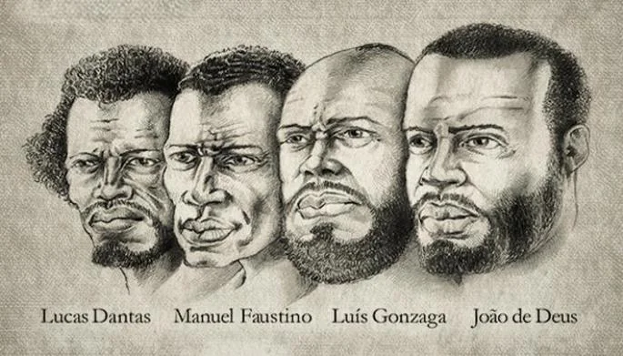

A Conjuração Baiana ou Revolta dos Alfaiates foi um movimento político popular ocorrido em Salvador, Bahia, em 1798.
Tinha como objetivos separar a Bahia de Portugal, abolir a escravatura e atender às reivindicações das camadas pobres da população.
A Conjuração Baiana foi composta, em sua maioria, por escravizados, negros livres, brancos pobres e mestiços, que exerciam as mais diferentes profissões, como sapateiros, pedreiros, soldados, etc. Influenciada pela Revolução Francesa e pela Revolução Haitiana, a Conjuração Baiana foi fortemente reprimida. Seus membros foram presos e, em 1799, os líderes do movimento foram condenados à morte ou ao degredo.
Líderes da Conjuração Baiana
Além da liderança exercida pelos alfaiates, o movimento também era encabeçado pelos soldados Luís Gonzaga das Virgens e Lucas Dantas

Contexto histórico da Conjuração Baiana
Da mesma forma, repercutia na Bahia o movimento chefiado pelo negro alforriado Toussaint Louverture, no Haiti, contra os colonizadores franceses - o primeiro grande levante de escravizados bem sucedidos na história. Outra causa que levou à revolta foi o fato da população da cidade de Salvador estar em situação de penúria, depois que a capital do Brasil colônia foi transferida para o Rio de Janeiro, em 1763. Afirmou-se a necessidade de fundar na Bahia uma república Democrática, onde não houvesse diferenças sociais e onde todos fossem iguais
Fim da conjuração Baiana
A distribuição dos panfletos com palavras de ordem levou as autoridades a agir prontamente e reprimir a manifestação. Alguns membros foram presos e forçados a delatar o restante dos participantes.
O governador da Bahia, Fernando José de Portugal e Castro, soube através de uma denúncia feita por Carlos Baltasar da Silveira, que os conspiradores iriam se reunir no Campo de Dique, no dia 25 de agosto. A ação do governo foi rápida e o coronel Teotônio de Souza foi encarregado de surpreendê-los em flagrante. Diante da aproximação das tropas do governo, alguns conseguiram fugir.Reprimida a rebelião, as prisões sucederam-se e o movimento foi desarticulado. Foram presas 49 pessoas, das quais três eram mulheres, nove escravizados e outros homens livres que exerciam profissões como alfaiates, barbeiros, soldados, bordadores e pequenos comerciantes.
Os principais envolvidos foram julgados e condenados à morte. No dia 8 de novembro de 1799, um ano e dois meses depois dos acontecimentos, os acusados foram declarados culpados por traição. Desta maneira, receberam a pena de morte por enforcamento e depois esquartejados: Luís Gonzaga das Virgens, Lucas Dantas, João de Deus e Manuel Faustino dos Santos Lira. Os corpos foram expostos em diversos locais da cidade de Salvador para servir de exemplo a possíveis subversivos.
O líderes da Conjuração Baiana
"A Conjuração Baiana teve como líderes integrantes da elite local e soldados, mas também indivíduos da classe mais pobre. Cipriano Barata foi responsável pela confecção de panfletos que eram distribuídos e colados nas portas das igrejas em Salvador. A liderança era representada por classes sociais que não tinham tanto destaque na sociedade baiana da época. Eram alfaiates, soldados de baixa patente, escravos libertos e brancos pobres.